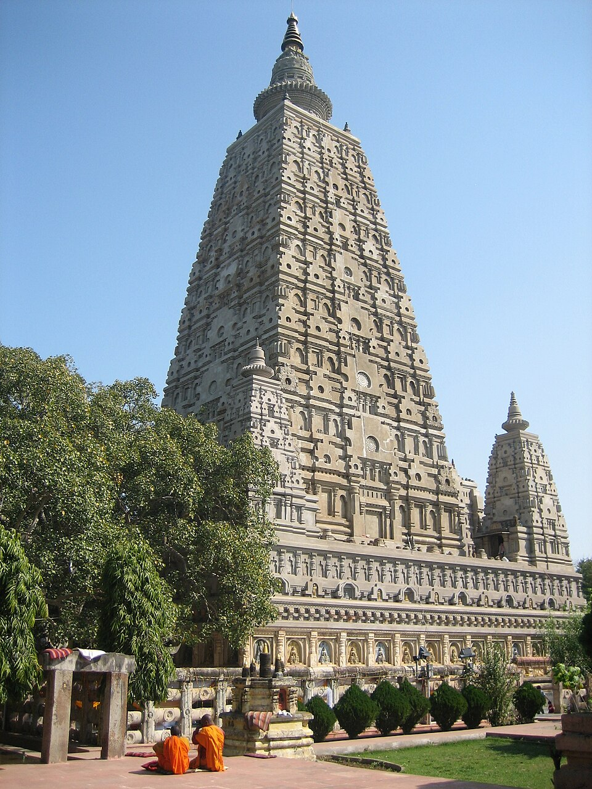

Core Content
EXAM TIP
Gupta Empire (c. 320-550 CE, ~230 years): Founded by Srigupta, real founder = Chandragupta I (Gupta Era 319-320 CE). Peak under Samudragupta (Napoleon of India) + Chandragupta II Vikramaditya (Navaratna, defeated Shakas 409 CE). Capital: Pataliputra (Bihar). 'Golden Age' — Kalidasa, Aryabhata, Ajanta paintings, Nalanda University (Kumargupta I, 427 CE). Decline: Hun invasions (5th-6th c.), Skandagupta fought them. Fa-Hien visited (405-411 CE).

Bodh Gaya (Bihar) — near the Gupta capital Pataliputra. The Guptas patronised Buddhist sites and built the original Mahabodhi Temple complex.

Gupta 'Golden Age' saw the emergence of early Hindu temple architecture — the template for all later Indian temples.
💡 Deep-dive ready: Complete analysis of the Gupta Empire, rulers, Golden Age achievements, Bihar connections, and 7 exam predictions:
Gupta Empire Master Detail →
A. Gupta Rulers — Key Facts EXAM CORE
| Ruler | Reign | Key Facts |
|---|---|---|
| Srigupta | c. 240-280 CE | Founder. First Gupta king. Ruled from Pataliputra (Bihar). |
| Chandragupta I | c. 319-334 CE | Real founder. Started Gupta Era (319-320 CE). Title: 'Maharajadhiraja.' Married Kumaradevi (Lichchhavi princess). |
| Samudragupta | c. 335-380 CE | 'Napoleon of India.' Allahabad Pillar inscription (by Harisena). Conquered Aryavarta + Dakshinapatha. Musician (veena on coins), poet ('Kaviraja'). |
| Chandragupta II Vikramaditya | c. 380-415 CE | Defeated Shakas (409 CE, Gujarat). Navaratna (Nine Gems including Kalidasa). Fa-Hien visited. Iron Pillar of Delhi. Peak of Golden Age. |
| Kumargupta I | c. 415-455 CE | Founded Nalanda University (c. 427 CE, Bihar). Maintained empire. Last stable Gupta king before Hun invasions. |
| Skandagupta | c. 455-467 CE | Last great Gupta. Defeated Huns. Restored Sudarshana Lake (Junagadh inscription). Treasury exhausted. Empire declined after him. |